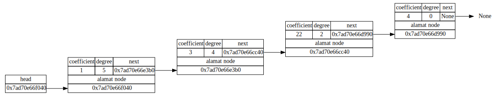
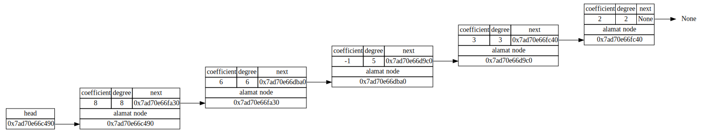
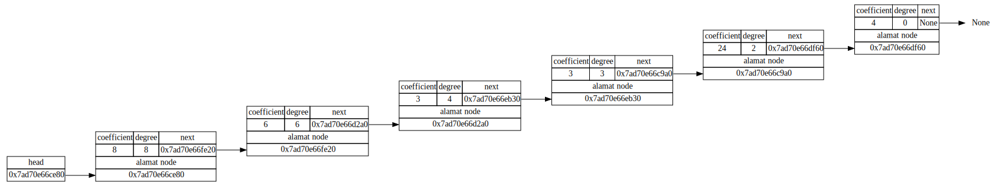
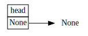

polinomial = SLLPolynomial()Tugas 1 Praktikum Struktur Data: Array, Linked List, OOP
Assignment 1: Array, Linked List, OOP
Offline di Departemen Matematika
Kembali ke Struktur Data
Tugas ini diberikan pada hari dan tanggal: Selasa, 22 Oktober 2024
Petunjuk umum:
Kerjakan secara individu.
Kerjakan tugas ini menggunakan bahasa pemrograman Python dengan file format berupa interactive Python notebook (yaitu file berbentuk .ipynb BUKAN .py), yang bisa dibuat misalnya menggunakan Jupyter Notebook atau Google Colaboratory.
Harap sertakan penjelasan untuk setiap variabel yang digunakan dan setiap proses secara singkat di sebelah (atas/bawah/kanan) barisnya (dengan comment,
#). Selain itu, sertakan juga penjelasan kode (yang bisa mencakupi idenya apa, bagaimana cara eksekusinya, atau tentang algoritma yang digunakan) pada cell di sebelah (atas/bawah) kode.Format nama file untuk Tugas 1 ini adalah:
Kelas SIAK_Tugas1PrakStrukdat_Nama Lengkap_NPM.ipynb
Contoh penamaan yang benar:
Kelas C_Tugas1PrakStrukdat_Haikal Fikri Rabani_2206823713.ipynb
Pengumpulan Tugas 1 dilakukan ke Google Forms berikut ini:
Apabila ada yang ingin direvisi setelah pengumpulan, lakukan pengumpulan ulang di Google Forms yang sama, tambahkan keterangan bahwa ada revisi, dan tambahkan kata “revisi” pada bagian akhir nama file, contohnya menjadi
Kelas C_Tugas1PrakStrukdat_Haikal Fikri Rabani_2206823713_revisi.ipynb
Kelas C_Tugas1PrakStrukdat_Haikal Fikri Rabani_2206823713_revisi2.ipynb
Kelas C_Tugas1PrakStrukdat_Haikal Fikri Rabani_2206823713_revisi3.ipynb
(Revisi boleh dilakukan berkali-kali.)
Dengan durasi pengerjaan sekitar 2 (dua) minggu, tenggat waktu (deadline) pengumpulan Tugas 1 ini (termasuk revisi) adalah Minggu, 3 November 2024, 23.59 WIB.
Sesuai standar Universitas Indonesia, plagiarisme dilarang keras dan bisa menyebabkan nilai tugas praktikum menjadi nol untuk semua pihak yang terlibat, tanpa peringatan apapun. Namun, Anda boleh langsung menggunakan kode yang ada di modul praktikum.
Module atau package Python yang boleh digunakan (di-import) untuk Tugas 1 ini hanyalah numpy dan graphviz. Apabila Anda berniat ingin menggunakan module lain, harap konfirmasikan ke narahubung terlebih dahulu (bisa saja diperbolehkan).
Narahubung untuk Tugas 1 Praktikum Struktur Data adalah:
Muhammad Fasya Syaifullah (ID LINE: ifasyai)
Pandu Adjie Sukarno (ID LINE: pandyadaffa)
Silakan hubungi narahubung di atas apabila ada yang ingin ditanyakan atau dikonfirmasikan.
Soal:
Tugas ini terdiri dari satu soal besar yang terbagi menjadi lima nomor.
Suatu polinomial dalam satu variabel memiliki bentuk
\[a_nx^n+a_{n-1}x^{n-1}+...+a_2x^2+a_1x+a_0\]
di mana bagian \(a_ix^i\) disebut sebagai term. Setiap term memiliki dua komponen, yaitu \(a_i\) yang merupakan koefisien dari suatu term dan \(i\) pada \(x^i\) yang merupakan derajat dari suatu term untuk \(i=0,1,...,n\).
Kita dapat merepresentasikan suatu polinomial dengan menggunakan singly linked list di mana satu term pada polinomial dapat direpresentasikan sebagai satu node pada linked list. Sehingga node pada linked list polinomial akan memiliki tiga komponen, yaitu koefisien dan derajat (yang merupakan komponen data) serta next (yang merupakan pointer).
- [5] Buatlah
class NodePolynomialyaitu class untuk menyimpan ketiga komponen di atas dalam suatu node.
- [25] Buat juga
class SLLPolynomial(dapat berupa child class dariclass SLListyang pernah dipelajari ataupun suatu class tersendiri) dengan satu pointer utamaheaddan satu operasi memasukkan node, yaituinsert_node. Ketentuan memasukkan node pada linked list polinomial adalah sebagai berikut:
Nilai koefisien pada node baru tidak boleh nol (Pada polinomial seharusnya bisa saja memiliki koefisien yang nol, namun pada umumnya term dengan koefisien nol tidak ditampilkan sehingga disini juga tidak usah dimasukkan sebagai node),
Node yang ditunjuk
headharus node dengan nilai derajat paling besar,Linked list harus terurut mulai dari derajat terbesar hingga terkecil,
Jika memasukkan node dengan derajat yang sudah ada pada linked list, maka nilai koefisien pada node baru akan dijumlahkan dengan nilai koefisien node yang sudah ada.
Kemudian representasikan polinomial berikut dalam bentuk linked list
\[Q_1(x) = 5x^5-10x^4+2x^2-2x+5\]
Contoh:
polinomial.insert_node(3,4)polinomial.print_all()head -> coef = 3 , deg = 4 --> Nonepolinomial.insert_node(1,5)polinomial.print_all()head -> coef = 1 , deg = 5 --> coef = 3 , deg = 4 --> Nonepolinomial.insert_node(0,3)Koefisien tidak boleh nolpolinomial.print_all()head -> coef = 1 , deg = 5 --> coef = 3 , deg = 4 --> Nonepolinomial.insert_node(4,0)polinomial.print_all()head -> coef = 1 , deg = 5 --> coef = 3 , deg = 4 --> coef = 4 , deg = 0 --> Nonepolinomial.insert_node(10,2)polinomial.print_all()head -> coef = 1 , deg = 5 --> coef = 3 , deg = 4 --> coef = 10 , deg = 2 --> coef = 4 , deg = 0 --> Nonepolinomial.insert_node(12,2)polinomial.print_all()head -> coef = 1 , deg = 5 --> coef = 3 , deg = 4 --> coef = 22 , deg = 2 --> coef = 4 , deg = 0 --> Nonepolinomial.get_digraph()Hasil polinomial pada contoh di atas adalah \[P_1(x)=x^5+3x^4+22x^2+4\]
- [20] Diberikan suatu array \(A=[a_0, a_1, ..., a_n]\) di mana elemen \(a_i\) merupakan nilai koefisien dari suatu polinomial pada term berderajat \(i\). Buatlah fungsi
to_linked_listyang mengubah array \(A\) menjadi suatu linked list polinomial. Tentukan Big-O dari algoritma yang telah anda buat dan berikan penjelasan atas jawaban anda (secara deskriptif saja). Kemudian tentukan array dari polinomial berikut dan ubah menjadi linked list polinomial menggunakan fungsito_linked_listyang telah anda buat
\[Q_2(x) = 9x^{10}-5x^5-15x^3+4x^2\]
Contoh:
A = np.array([0, 0, 2, 3, 0, -1, 6, 0, 8])
polinomial2 = to_linked_list(A)
polinomial2.print_all()Koefisien tidak boleh nol
Koefisien tidak boleh nol
Koefisien tidak boleh nol
Koefisien tidak boleh nol
head -> coef = 8 , deg = 8 --> coef = 6 , deg = 6 --> coef = -1 , deg = 5 --> coef = 3 , deg = 3 --> coef = 2 , deg = 2 --> None[20] Buat fungsi atau method
evaluate, jika diberikan linked list polinomial \(P(x)\) dan suatu nilai tertentu \(c\), fungsi atau method ini akan mengembalikan hasil evaluasi polinomial tersebut pada nilai \(x=c\), yaitu \(P(c)\).Kemudian evaluasi polinomial \(Q_1(x)\) dan \(Q_2(x)\) pada no. 2 untuk \(x = 24\).
Contoh:
Pada polinomial di contoh sebelumnya, yaitu \(P_1(x)\), jika dievaluasi pada \(x=0\), \(x=1\), dan \(x=2\) adalah sebagai berikut:
\[P_1(0)=(0)^5+3(0)^4+22(0)^2+4=4\]
polinomial.evaluate(0)4\[P_1(1)=(1)^5+3(1)^4+22(1)^2+4=30\]
polinomial.evaluate(1)30\[P_1(2)=(2)^5+3(2)^4+22(2)^2+4=172\]
polinomial.evaluate(2)172- [30] Misalkan diberikan dua polinomial \[P_1(x) = a_nx^n+a_{n-1}x^{n-1}+...+a_2x^2+a_1x+a_0\] \[P_2(x) = b_nx^n+b_{n-1}x^{n-1}+...+b_2x^2+b_1x+b_0\]
Maka penjumlahan dua polinomial didefinisikan sebagai \[\begin{align*}
P_1(x)+P_2(x)&=(a_nx^n+a_{n-1}x^{n-1}+...+a_2x^2+a_1x+a_0)+(b_nx^n+b_{n-1}x^{n-1}+...+b_2x^2+b_1x+b_0)\\
&=(a_n+b_n)x^n+(a_{n-1}+b_{n-1})x^{n-1}+...+(a_2+b_2)x^2+(a_1+b_1)x+(a_0+b_0)
\end{align*}\] Masih bermain dengan SLLPolynomial, gunakan operator overloading untuk mengubah operator + agar dapat menjumlahkan dua polinomial seperti diatas. Kemudian tentukan \(Q_1(x)+Q_2(x)\)
Contoh:
contoh 1: \[(x^5+3x^4+22x^2+4)+(8x^8+6x^6+-x^5+3x^3+2x^2)=8x^8+6x^6+3x^4+24x^2+4\]
polinomial = SLLPolynomial()
polinomial.insert_node(3,4)
polinomial.insert_node(1,5)
polinomial.insert_node(4,0)
polinomial.insert_node(10,2)
polinomial.insert_node(12,2)polinomial.print_all()head -> coef = 1 , deg = 5 --> coef = 3 , deg = 4 --> coef = 22 , deg = 2 --> coef = 4 , deg = 0 --> Nonepolinomial.get_digraph()
polinomial2 = SLLPolynomial()
polinomial2.insert_node(8,8)
polinomial2.insert_node(6,6)
polinomial2.insert_node(-1,5)
polinomial2.insert_node(3,3)
polinomial2.insert_node(2,2)polinomial2.print_all()head -> coef = 8 , deg = 8 --> coef = 6 , deg = 6 --> coef = -1 , deg = 5 --> coef = 3 , deg = 3 --> coef = 2 , deg = 2 --> Nonepolinomial2.get_digraph()
polinomial3 = polinomial + polinomial2
polinomial3.print_all()head -> coef = 8 , deg = 8 --> coef = 6 , deg = 6 --> coef = 3 , deg = 4 --> coef = 3 , deg = 3 --> coef = 24 , deg = 2 --> coef = 4 , deg = 0 --> Nonepolinomial3.get_digraph()
contoh 2: \[(8x^8+6x^6+3x^4+24x^2+4)+(0)=8x^8+6x^6+3x^4+24x^2+4\]
polinomial4 = SLLPolynomial()
polinomial4.print_all()head -> Nonepolinomial4.get_digraph()
polinomial5 = polinomial3 + polinomial4
polinomial5.print_all()head -> coef = 8 , deg = 8 --> coef = 6 , deg = 6 --> coef = 3 , deg = 4 --> coef = 3 , deg = 3 --> coef = 24 , deg = 2 --> coef = 4 , deg = 0 --> Nonepolinomial5.get_digraph()Catatan: Tampilkan hasil linked list untuk soal no 2, 3, dan 5. Anda dibebaskan boleh hanya menggunakan print atau menggunakan graphviz.